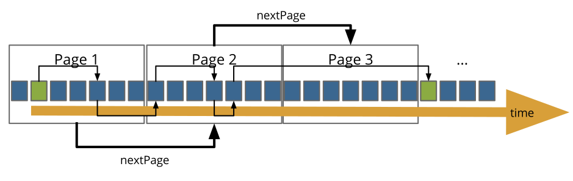

A new approach for the client/server relation within route planning
Ever since public transit agencies have found their way to the Web, they inform travelers using route planning software made available on their website. These travelers also need to be informed about other modes of transport, for which they have to consult other websites, or for which they have to ask the transit agency’s server maintainer to implement new functionalities.

With Linked Connections, we introduce an affordable publishing method for transit data, which allows user agents to execute the route planning algorithm. We publish paged documents containing a stream of hops between transit stops (connections, blue squares) sorted by departure time. Using these documents, clients are able to perform intermodal route planning in a reasonable time. Furthermore, such clients are fully in charge of the algorithm, and can now also route in different ways by integrating datasets of a user’s choice.
Pieter Colpaert, Alejandro Llaves, Ruben Verborgh, Oscar Corcho, Erik Mannens, and Rik Van de Walle. Intermodal public transit routing using Linked Connections. Proceedings of the 14th International Semantic Web Conference: Posters and Demos (2015) - check out the poster
“Linked Connections define a way to publish raw transit data, so that it can be used for intermodal route planning.”
Mail me at pieter.colpaert@ugent.be or send me a tweet using @pietercolpaert.
You can find out more about my work on my homepage